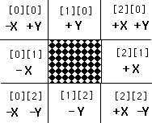

Initialize the Histo-Scope connection software and set up a potential connection to a Histo-Scope process. The identity string identifies the process in the Histo-Scope connection panel and may be up to 40 characters long. This routine should be called before any other Histo-Scope routine.
If you are using HBOOK, this routine should be called before calling hrend, since hs_complete() may still access the HBOOK data.
Under rare circumstances, an hs_complete() call can take up to 1 minute to complete if one or more Histo-Scope(s) are viewing a large amount of data and have somehow fallen behind in receiving the data. This call allows a maximum of one minute for sending all data requested by Histo-Scopes before the hs_complete() was called.
For users who want to build Histo-Scope into their program rather than using it separately as an inspection tool. hs_histoscope invokes Histo-Scope as a sub-process. The scope process is pre-connected to display the data generated in the user process. The routine can either start the Histo-Scope and return immediately (return_immediately != 0), or it can start it and return after the user closes the Histo-Scope window (return_immediately == 0).
char *n config_file (input, n <= system maximum for filenames)
For users who want to build Histo-Scope into their program and have it automatically display plots. hs_histo_with_config invokes Histo-Scope as a sub-process and displays the plots specified in the configuration file config_file. The scope process is pre-connected to display the data generated in the user process. The routine can either start the Histo-Scope and return immediately (return_immediately != 0), or it can start it and return after the user closes the Histo-Scope window (return_immediately == 0).
Returns the number of connected Histo-Scopes. This routine is useful for checking that a Histo-Scope created with hs_histoscope has successfully begun executing and is connected to its client program. Since this takes some time, it is suggested that hs_num_connected_ scopes be called to check that a scope is connected before calling hs_load_config_file or hs_load_config_string.
Calling hs_load_config_file causes all connected Histo-Scopes to read the configuration file specified by config_file and execute all of the commands to display plots in the file.
Calling hs_load_config_string causes all connected Histo-Scopes to execute all of the commands to display plots in the string specified by config_string.
Call this routine after you book the histograms or Ntuples you will use in the program and after you call hs_initialize(). The routine will set up all current HBOOK histograms and Ntuples in the specified top directory for use with Histo-Scope. The top_directory string supplied should begin with "//". (Note: unpredictable results may occur if this routine is called without first calling the appropriate HBOOK routines for the top directory.)
Call this routine if you have booked new histograms or Ntuples, or deleted, renamed, rebinned, or re-set existing ones since calling hs_hbook_setup(). hs_reset_hbook_setup will reset Histo-Scope's list for the specified top directory. The top_directory string supplied should begin with "//".
The Histo-Scope data routines provide a much simpler interface than HBOOK.
They can be used instead of HBOOK routines or in addition to them. Many of
these routines have common parameters that have limitations on their length.
title should be less than or equal to 80 characters, category
should be less than or equal to 255 characters, filename should be
less than or equal to the system maximum for filenames, and prefix
should be less than or equal to 255 characters.
char *title; (input)
char *category; (input)
char *x_label; (input)
char *y_label; (input)
int bins; (input)
float min; (input)
float max; (input)
int id; (returned)
Create (or book) a one-dimensional histogram. uid defines a
user-specified identification number which can later be used along with the
category to specify the item created. title defines the title for the
histogram window when it is displayed. category is an optional string (i.e.
can be NULL or empty) defining a hierarchical "location" for the histogram.
Subcategories can be specified using the "/" character as in UNIX file
specifications. If a category or subcategory does not exist, it is created.
If the category argument is missing (either "", or NULL) the histogram will
appear in the top level category as uncategorized. The histogram axes are
given the labels x_label and y_label. n_bins is the number of bins in the
histogram. Any values <= min or >= max are collected into under-flow
and over-flow bins. The Histo-Scope defined id for the histogram is returned
to the user and is used in later calls to identify the histogram just created.
If id is <= 0, an error occured in creating the histogram (check the
arguments supplied to the function). The value of min should be less than max,
and bins should be greater than 0.
Create (or book) a two-dimensional histogram. uid defines a
user-specified identification number which can later be used along with the
category to specify the item created. title defines the title for the
histogram window when it is displayed. category is an optional (can be NULL or
empty) string defining a hierarchical "location" for the histogram.
Subcategories can be specified using the "/" character as in UNIX file
specifications. If a category or subcategory does not exist, it is created.
If the category argument is missing (either "", or NULL) the histogram will
appear in the top level category as uncategorized. The histogram axes are
given the labels x_label, y_label, and z_label. x_bins and y_bins
are the number of bins for each axis of the histogram. Any values <= min or
>= max are collected into under- and over-flow bins. The
Histo-Scope defined id for the histogram is returned and is used in later calls
to identify the histogram just created. If id is <= 0, an error occurred in
creating the histogram (check the arguments supplied to the function). The
value of x_min and y_min should be less than its corresponding maximum, and
x_bin and y_bin should both be greater than 0.
char *title; (input)
char *category; (input)
int n_variables; (input)
char *names[n_variables];
(input)
int id; (returned)
Defines an Ntuple with n_variables variables. uid defines a
user-specified identification number which can later be used along with the
category to specify the item created. title defines the title for the Ntuple,
and category is an optional (i.e. can be NULL or empty) string defining a
hierarchical "location" for the histogram. Subcategories can be specified
using the "/" character as in UNIX file specifications. If a
category or subcategory does not exist, it is created. If the
category argument is missing (either "", or NULL) the Ntuple will appear in the
top level category as uncategorized. names is a pointer to an array of pointers
to null-terminated strings naming each Ntuple variable. Storage allocation is
automatic: as the Ntuple grows, more space will be allocated. However,
Ntuples must fit into virtual memory. The Histo-Scope defined id
for the Ntuple is returned and is used in later calls to identify the Ntuple
just created. If id is <= 0, an error occurred in creating the Ntuple
(check the arguments supplied to the function).
char *title; (input)
char *category; (input)
float min; (input)
float max; (input)
int id; (returned)
Creates an indicator. uid defines a user-specified identification number which can later be used along with the category to specify the item created. title defines the title for the indicator, and category is an optional string (can be NULL or an empty string) defining a hierarchical "location" for the indicator. Subcategories can be specified using the "/" character as in UNIX file specifications. If a category or subcategory does not exist, it is created. If the category argument is missing (either "", or NULL) the indicator will appear in the top level category. min and max is the minimum and maximum values for the indicator. The Histo-Scope defined id for the indicator is returned and is used in later calls to identify the indicator just created. If id is <= 0, an error occurred in creating the indicator (check the arguments supplied to the function).
char *title; (input)
char *category; (input)
float min; (input)
float max; (input)
float default_value; (input)
int id; (returned)
Creates a control. uid defines a user-specified identification number which can later be used along with the category to specify the item created. title defines the title for the control, and category is an optional string (can be NULL or an empty string) defining a hierarchical "location" for the control. Subcategories can be specified using the "/" character as in UNIX file specifications. If a category or subcategory does not exist, it is created. If the category argument is missing (either "", or NULL) the control will appear in the top level category. min and max is the minimum and maximum values for the control. The Histo-Scope user will not be able to set the control outside of this range. The Histo-Scope defined id for the control is returned and is used in later calls to identify the control just created. If id is <= 0, an error occurred in creating the control (check the arguments supplied to the function).
char *title; (input)
char *category; (input)
int id; (returned)
Creates a trigger. uid defines a user-specified identification number which can later be used along with the category to specify the item created. title defines the title for the trigger, and category is an optional string (can be NULL or an empty string) defining a hierarchical "location" for the trigger. Subcategories can be specified using the "/" character as in UNIX file specifications. If a category or subcategory does not exist, it is created. If the category argument is missing (either "", or NULL) the trigger will appear in the top level category. The Histo-Scope defined id for the trigger is returned and is used in later calls to identify the trigger just created. If id is <= 0, an error occurred in creating the trigger (check the arguments supplied to the function).
id = hs_create_group(uid, title, category, groupType, numItems, itemId, ersDisp)
int uid; (input)
char *title; (input)
char *category; (input)
int groupType; (input)
int numItems; (input)
int itemId[numItems]; (input, numItems <= 81)
int errsDisp[numItems]; (input, numItems <= 81)
int id; (returned)
Creates a group , which is an item that points to other data items, thus grouping them into one addressable entity. uid defines a user-specified identification number which can later be used along with the category to specify the item created. category is an optional string (can be NULL or an empty string) defining a hierarchical "location" for the group. Subcategories can be specified using the "/" character as in Unix file specifications. If a category or subcategory does not exist, it is created. If the category argument is missing (either "'', or NULL) the group will appear in the top level category. The Histo-Scope-defined id for the group is returned and is used in later calls to identify the group just created. If id is <= 0, an error occured in creating the group (check the arguments supplied to the function). groupType is the group's suggested window type. The number of items in this group, specified by numItems, should not be larger than 81. itemId is an array of Histo-Scope id numbers for the items in the group. errsDisp is an array of values (NO_ERROR_BARS, DATA_ERROR_BARS, GAUSSIAN_ERROR_BARS) that corresponds to the itemId array and tells Hist-Scope how to display errors for the corresponding histogram (used only when the corresponding data item is a histogram).
A group can be made out of a number of items in order to display them as a Multiple Plot Window, an Overlaid Plot, or simply as a convenience for putting plots up individually with fewer mouse clicks. Data items may be put into more than one group. Including an item in the group does not effect the display of the item individually in the Histo-Scope main panel. The item still appears in the main panel list box and can be viewed individually. The category string can be used to affect how Histo-Scope items appear in the main panel.
When a group is selected in Histo-Scope's main window and the user presses the "View" Button, the groupType field tells Histo-Scope how to display the items in the group. This can be overridden in the Histo-Scope main panel by using the "View Multiple" or "View Overlaid" buttons. If groupType is HS_MULTI_PLOT, pressing the View button displays all the 1- and 2D histograms in the group as one Multi-plot window. Similarly, if you would like to see all the 1D histograms in a group displayed over each other in one plot window, you can specify a groupType of HS_OVERLAY_PLOT. Triggers, controls, and indicators cannot appear inside a Multiple Plot Window or Overlaid Plot and so these items in a group are displayed in their own windows.
Specifying HS_INDIVIDUAL for groupType means that if a group is selected, and the "View" button is pressed on the Histo-Scope main panel, each data item in the group will be viewed individually. In the case of Ntuples, the Ntuple panel will be displayed so the the user can choose the variables to plot and the type to use.
float x; (input)
float weight; (input)
Adds a value (weight) to the one-dimensional histogram identified by id.
float x; (input)
float y; (input)
float weight; (input)
Adds a value (weight) to the two-dimensional histogram identified by id.
float *data; (input)
float *err; (input)
float *err_m; (input)
Replaces the accumulated bin and error data supplied for the one-dimensional histogram identified by id and clears the overflow bins. data is a one-dimensional array containing the new data for the histogram and must be of the appropriate size (i.e. the correct number of bins) for the one-dimensional histogram being filled. pos_errors and neg_errors are the errors of the one-dimensional histogram. Either error argument can be specified as NULL, in which case the corresponding errors are not changed. pos_errors and neg_errors should have the same number of elements as the histogram has bins. If the histogram has positive errors, but not negative ones, Histo-Scope assumes errors are symmetric. Thus memory can be saved by specifying only positive errors when errors are symmetric. Both pos_errors and neg_errors should be specified as positive floating numbers.
float *data; (input)
float *err; (input)
float *err_m; (input)
Replaces the accumulated bin and error data supplied for the two-dimensional histogram identified by id and clears the overflow bins. data is a two-dimensional array containing the new data for the histogram and must be of the appropriate size (i.e. the correct number of bins) for the two-dimensional histogram being filled. pos_errors and neg_errors are the errors of the two-dimensional histogram. Either error argument can be specified as NULL, in which case the corresponding errors are not changed. pos_errors and neg_errors should have the same number of elements as the histogram has bins. If the histogram has positive errors, but not negative ones, Histo-Scope assumes errors are symmetric. Thus memory can be saved by specifying only positive errors when errors are symmetric. Both pos_errors and neg_errors should be specified as positive floating numbers.
float *pos_errors; (input)
float *neg_errors; (input)
Copies one or both arrays of real numbers representing the errors of a two-dimensional histogram. Either array pointer can be NULL, in which case the corresponding errors are not set. Arrays should have the same number of elements in each dimension as the histogram has bins. If a histogram has positive errors, but not negative ones, Histo-Scope assumes errors are symmetric. Thus memory can be saved by specifying an array of positive errors and NULL as the negative errors when errors are symmetric. Both pos_errors and neg_errors should be specified as positive floating numbers.
float *values; (input)
int status; (returned)
Adds an array of real values, in the order they are named in HS_CREATE_NTUPLE, to an Ntuple identified by id. Returns istatus. Check this status to ensure the array was added and to be certain your Ntuple still fits within the virtual memory of your machine. istatus <= 0 indicates memory was exhausted. istatus == 0 indicates an incorrect id or other user error. istatus >= 0 indicates success. The Ntuple id number is returned upon success.
float value; (input)
Sets the value of an indicator to value. The value should be within the range specified for the indicator. However the indicator is set even if the value is out of range.
float *ret_value; (returned)
Returns the current value of a control.
int status; (returned)
Returns 1 if the trigger identified by id has been set by a Histo-Scope user. Otherwise 0 is returned. Please note that this routine will return 1 once for each button press by the Histo-Scope user. Thus, if the user has pressed the trigger 5 times, the program must call hs_check_trigger at least 5 times.
char *category; (input)
int id; (returned)
Returns the Histo-Scope id for a specified uid and category pair, or -1 if a match was not found. uid is the user-specified identification number which was specified when the item was created. category is a string defining a hierarchical "location" for the indicator also specified when the item was created. The Histo-Scope defined id is returned.
char *category; (input)
int id; (returned)
Returns the Histo-Scope id for a specified item title and category pair, or -1 if a match was not found. title is the title specified for the item when it was created. category is the string specified at item creation defining a hierarchical "location" for the item.
char *category; (input)
int *ids; (returned)
int num; (input)
int matchFlg; (input)
int num_match; (returned)
Fills a list of Histo-Scope id numbers. The user must allocate at least num integer elements for the array ids. These ids are returned in the order in which the histograms were created, or read in from a file. Returns the number of matching title/category strings, num_match, which may be larger than num, the maximum number of items that can be returned. title specifies the title of the data item(s) to list. category is a string defining a hierarchical "location" for the indicator. Optionally, the category can include a trailing "..." which will return the id numbers for items in subcategories of the specified category. For example, "HS/..." matches "HS" and "HS/Nts" but not "HSNTuples", "HSNTuples" nor "hs". If the category parameter is specified as "..." all categories will match including uncategorized items. match_flag specifies exact or inexact matches for the title string specified. If match_flag .EQ. 0, then all id's returned will exactly match the title specified. If match_flag .NE. 0, then leading spaces are ignored and id's containing the specified title are returned. Specifying "" for title and an inexact match for match_flag will match all titles. Specifying NULL for title and an exact match will match all uncategorized items. If the category supplied is not valid, -1 will be returned in num_match.
int id_user; (returned)
Returns the user-specified identification number (uid) value for a given Histo-Scope id, or 0 if id was invalid or not found.
char *category; (input)
int length; (returned)
Returns the category string and its length for a given Histo-Scope id, or -1 if id was invalid.
char *title; (input)
int length; (returned)
Returns the title and its length for an item specified by id, or -1 if id was invalid.
int data_type; (returned)
HS_1D_HISTOGRAM
HS_2D_HISTOGRAM
HS_NTUPLE
HS_INDICATOR
HS_CONTROL
HS_TRIGGER
HS_NONE
HS_NONE refers to a non-existent item.
These values are defined in histoscope.inc.
char *prefix; (input)
int num_items; (returned)
Reads all of the items from the Histo-Scope formatted file specified by filename. All category strings will be prefixed by a new top level category specified in prefix. This may be NULL (or " " (spaces)), meaning no prefix is added. Returns the number of items read; otherwise returns -1 and prints an error message.
char *prefix; (input)
char *category; (input)
int *uids; (input)
int n_uids; (input)
int num_items; (returned)
Selectively reads items from a specific category and all its subcategories that match a list of uids from the Histo-Scope formatted file specified by filename. All category strings read from the file will be prefixed by a new top level category specified in prefix. This may be specified as %VAL(0) (or " "), meaning that no prefix should be added. If an item with the same (prefixed) category and uid already exists, the item in the file will not be read and an error message will inform the user. If n_uids is > 0, the array uids specifies the uid's of items to read from the file. If uids is %VAL(0) or n_uids == 0, all items in the specified category and its subcategories will be read. n_uids specifies the number of items in array uids. Returns the number of items read, or -1 if an error occurred.
For example, if "HS" is specified for category and "Run1" for prefix, items read from the file with category "HS" will become "Run1/HS" and items read from the file with category "HS/Ntuples" will become "Run1/HS/Ntuples". The new (prefixed) category must be less than 255 characters in length, or the item will not be read from the file. To read non-selectively regardless of the category, specify " " as category.
int num_items; (returned)
Saves all current histograms, Ntuples, indicators, and controls created by Histo-Scope library routines or read from Histo-Scope formatted files to a Histo-Scope-format file. Triggers are not written to the file. The number of items written is returned in num_items, or -1 if an error occurred. The named file is open for writing ("w"), discarding previous contents, if any.
char *category; (input)
int *uids; (input)
int n_uids; (input)
int num_items; (returned)
Selectively saves the histograms, Ntuples, indicators, and controls in a specified category that match a list of uids to a Histo-Scope format file filename. Items will be written only when they match the specified category exactly. Specify " " or NULL as the category to save only uncategorized items. uids is an array of user id values of length n_uids specifying which items to write. If n_uids is <= 0 or uids is NULL, all items in the category specified are saved. The number of items written is returned, or -1 if an error occurs. The file named is open for writing ("w"), discarding previous contents, if any.
Resets the data item. For histograms, all of the bins and overflows are set to 0. For Ntuples all of the data is removed. Indicators are set to *not set*. Controls are set to their default value. For triggers, any pending trigger presses are cleared. For groups, all the data items in the group are reset.
Deletes a histogram, Ntuple, indicator, control, or trigger identified by id.
Deletes a list of items identified by id.
Deletes all items in the named category. All data content is lost. The category string must exactly match the category of the item to be deleted unless a trailing "..." is specified as part of the category. When the "..." is specified, data items in the category and all subcategories of the category will be deleted. Specifying " " or NULL for category will delete all uncategorized items. For example, specifying a category "HS/..." will delete all items with category "HS" and "HS/Nts" but not "HSNTuples" nor "hs". If just "..." is specified, all items are deleted.
int newuid; (input)
Changes the user-defined identification number (uid) to new_uid for an item specified by its Histo-Scope identification number, id. If a Histo-Scope is connected when this routine is called, the Histo-Scope main window will be updated with the new uid.
char *newcategory; (input)
Changes the category of an item specified by its Histo-Scope identification number, id. If a Histo-Scope is connected when this routine is called, the Histo-Scope main window will be updated with the new category.
char *newtitle; (input)
Changes the title of an item specified by its Histo-Scope identification number, id. If a Histo-Scope is connected when this routine is called, the Histo-Scope main window will be updated with the new title.
Returns the number of Histo-Scope data items defined so far.
int num_bins; (returned)
Returns the number of bins for a one-dimensional histogram identified by id, or -1 if the id does not refer to a one-dimensional histogram.
int *num_x_bins; (returned)
int *num_y_bins; (returned)
Returns the number of bins in the two-dimensional histogram specified by id. num_x_bins is the number of bins in X. num_y_bins is the number of bins in Y. -1 is returned for num_x_bins and num_y_bins if id does not refer to a two-dimensional Histogram.
float *min; (returned)
float *max; (returned)
Returns the minimum (low edge of first bin) value in min and maximum (high edge og last bin) value in max representing the horizontal limits of a one-dimensional histogram. If id does not refer to a one-dimensional histogram, zero is returned for min and max.
float *x_min; (returned)
float *x_max; (returned)
float *y_min; (returned)
float *y_max; (returned)
Returns the minimum and maximum values representing the horizontal limits of a two-dimensional histogram specified by id. If id does not refer to a two-dimensional histogram, zero is returned for min and max.
int num_entries; (returned)
Returns the number of fill operations that have been performed on the histogram referred to by id, or -1 if the id does not refer to a histogram or Ntuple item.
float *data; (returned)
Returns the bin data from a one-dimensional histogram. The data array must be large enough and be dimensioned appropriately for the number of bins in the histogram.
float *data; (returned)
Returns the bin data from a two-dimensional histogram. The data array must be large enough and be dimensioned appropriately for the number of bins in the histogram.
float *pos_errors; (returned)
float *neg_errors; (returned)
Return the error bar data from a one-dimensional histogram. pos_errors is a one-dimensional array to receive data for upper error bars. Must be dimensioned appropriately for the number of bins in the histogram. neg_errors is a one-dimensional array to receive data for lower error bars. neg_errors can be NULL which means only positive errors are returned. If non NULL, neg_errors must be dimensioned appropriately for the number of bins in the histogram. The status returned can be:
HS_NO_ERRORS - Item has no error data
HS_POS_ERRORS - Positive errors (only) are returned
HS_BOTH_ERRORS - Positive and negative errors are returned
HS_ITEMNOTFOUND_ERRORS - id does not refer to a one-dimensional histogram
These values are defined in histoscope.inc.
float *pos_errors(x_bins, y_bins); (returned)
float *neg_errors(x_bins, y_bins); (returned)
Returns the error bar data from a two-dimensional histogram. pos_errors is a two-dimensional array to receive data for upper error bars. Must be dimensioned appropriately for the number of bins in the histogram. neg_errors is a two-dimensional array to receive data for lower error bars. neg_errors can be NULL, which means only positive errors are returned. If not NULL, neg_errors must be dimensioned appropriately for the number of bins in the histogram. The status returned can be:
HS_NO_ERRORS - Item has no error data
HS_POS_ERRORS - Positive errors (only) are returned
HS_BOTH_ERRORS - Positive and negative errors are returned
HS_ITEMNOTFOUND_ERRORS - id does not refer to a one-dimensional histogram
These values are defined in histoscope.inc.
float *underflow; (returned)
float *overflow; (returned)
Returns the overflow data from a one-dimensional histogram.
float *overflows; (returned)
Returns the overflow data from a two-dimensional histogram. This is a 3 x 3 array:

Figure 48
float x; (input)
float value; (returned)
Returns the value stored in the histogram bin referenced by x. The result is undefined if id is not a one-dimensional histogram, or if x is not within the range of the histogram.
float x; (input)
float y; (input)
float value; (returned)
Returns the value stored in the histogram bin referenced by x and y. The result is undefined if id is not a two-dimensional histogram, or if x or y are not within the range of the histogram.
int bin_num; (input)
float value; (returned)
Returns the value in the histogram bin referred to by bin (or channel) number bin_num. The result is undefined if id is not a one dimensional histogram or bin_num is less than 1 or greater than the number of bins.
int x_bin_num; (input)
int y_bin_num; (input)
float value; (returned)
Returns the value in the histogram bin referred to by bin (or channel) number x_bin_num, y_bin_num. The result is undefined if id is not a two-dimensional histogram or if either bin number is less than 1 or greater than the number of bins for the axis.
float *x; (returned)
int *bin_num; (returned)
float *value; (returned)
Returns the x-coordinate (x) the bin number (bin_num) and the bin content (value) where the histogram data reaches a minimum. The routine returns a bin_num of 0 if the histogram does not refer to a one-dimensional histogram or the histogram is empty (i.e. has not yet been filled).
float *x; (returned)
float *y; (returned)
int *x_bin_num; (returned)
int *y_bin_num; (returned)
float *value; (returned)
Returns the x- and y-coordinate (x and y) the bin numbers (x_bin_num and y_bin_num), and the bin content (value) where the two-dimensional histogram data reaches a minimum. The routine returns a bin number of 0 if the histogram does not refer to a two-dimensional histogram, or the histogram is empty (i.e. has not yet been filled).
float *x; (returned)
int *bin_num; (returned)
float *value; (returned)
Returns the x-coordinate (x) the bin number (bin_num), and the bin content (value) where the histogram data reaches a maximum. The routine returns a bin_num of 0 if the histogram does not refer to a one-dimensional histogram or the histogram is empty (i.e. has not yet been filled).
float *x; (returned)
float *y; (returned)
int *x_bin_num; (returned)
int *y_bin_num; (returned)
float *value; (returned)
Returns the x- and y-coordinate (x and y) the bin numbers (x_bin_num and y_bin_num), and the bin content (value) where the two-dimensional histogram data reaches a maximum. The routine returns a bin_num of 0 if the histogram does not refer to a two-dimensional histogram, or the histogram is empty (i.e. has not yet been filled).
float *mean; (returned)
float *std_dev; (returned)
Calculates and returns the mean and standard deviation of a one-dimensional histogram.
float *x_mean; (returned)
float *y_mean; (returned)
float *x_std_dev; (returned)
float *y_std_dev; (returned)
Calculates and returns the mean and standard deviation of a two-dimensional histogram.
float integrl; (returned)
Calculates the integral (the sum of the bin contents * binwidth) of the bin data in a histogram. Overflow data is not counted. The result returned is -1.0 if id does not exist or does not refer to a one-dimensional histogram.
Calculate and store Gaussian errors in a histogram. If positive errors have been previously stored, they will be disregarded. The new errors will be stored in the "positive" error array. The errors are computed assuming the central limit theorem: they are equal to the square root of the bin contents. If one or more bin value is negative, no errors are created or changed, and an error message is printed. If the item referred by id is not a one-dimensional or a two-dimensional histogram, no action is taken besides printing an error message.
char *title, *category; (input)
int id1, id2; (input)
float const1, const2; (input)
int new_id; (returned)
Creates a new histogram (one-dimensional or two-dimensional) whose data is the sum, bin by bin, of two histograms specified by HistoScope identification numbers id1 and id2. Each bin value of the new histogram will be equal to const1 * bin value of histogram id1 + const2 * bin value of histogram id2. const1 or const2 can be 0., or one of the id's can also be set to 0, in which case the corresponding histogram will not be referenced and the new histogram will simply be the other histogram multiplied by its constant. The resulting histogram has number of fills set to number of bins. Errors are propagated assuming that these errors are Gaussian (i.e. "negative" errors are ignored). uid is the User Identification for the newly created histogram. title defines the title for the new histogram. category is a string defining a hierarchical "location" for the histogram. Subcategories can be specified using the "/" character as in UNIX file specifications. If a category or subcategory does not exist, it is created. If the category argument is blank (either " '', or ' ') the histogram will appear in the top level category. The routine returns an error (a new_id of -1) if both histograms do not exist, the histogram types are different, or the number of bins or low/upper edges are inconsistent. Returns the id of the new histogram containing the sum of the two histograms, or -1 if the operation could not be performed.
char *title, *category; (input)
int id1, id2; (input)
float const; (input)
int new_id; (returned)
Creates a new histogram (one-dimensional or two-dimensional) whose data is the multiplication, bin by bin, of two histograms specified by id1 and id2. The bin content of the new histogram will be equal to const * bin value of histogram id1 * bin value of histogram id2. If one of the id's is specified as 0, the other histogram will just be multiplied by the constant. uid is the User Identification for the newly created histogram. title defines the title for the new histogram. category is a string defining a hierarchical "location" for the histogram. Subcategories can be specified using the "/" character as in UNIX file specifications. If a category or subcategory does not exist, it is created. If the category argument is blank (either " '', or ' ') the histogram will appear in the top level category. Returns the id of the new histogram containing the result of the operation, or -1 if the operation could not be performed. Both histograms specified should be of the same type and have the same number of bins and bin edges.
char *title, *category; (input)
int id1, id2; (input)
float const; (input)
int new_id; (returned)
Create a new histogram (one-dimensional or two-dimensional) whose data is the division, bin by bin, of two histograms specified by id1 and id2. uid is the User Identification for the newly created histogram. title defines the title for the new histogram window when it is displayed. category is a string defining a hierarchical "location" for the histogram. Subcategories can be specified using the "/" character as in UNIX file specifications. If a category or subcategory does not exist, it is created. If the category argument is blank (either " '', or ' ') the histogram will appear in the top level category. The bin content of the new histogram will be equal to const * bin value of histogram id1 / bin value of histogram id2. If the bin value of histogram id2 is 0, the value 1 is used in the computation. Returns new_id which is the id of a new histogram containing the result of the operation, or -1 if an error occurred.
char *title, *category; (input)
int id; (input)
int new_id; (returned)
Create a new histogram (one-dimensional) whose data is the derivative of the histogram specified by id. This derivative is computed bin by bin:
Dh/db = (H(j) - H(j-1))/bin_size.
If the input histogram, specified by id, has error bars, the errors are computed assuming that there is no statistical correlation between bins and the error values are gaussian. uid is the User Identification for the newly created histogram. title defines the title for the histogram. category is a string defining a hierarchical "location" for the histogram. Returns new_id which is the id of a new histogram containing this derivative.
The two routines, hs_sum_category and hs_sum_file, are designed to allow the user to sum together the data items from two different runs of the same program. For example, if on one day, a program creates the following items:
category uid item type
mydata 101 1-d histogram
mydata 102 2-d histogram
mydata/ntuples 202 Ntuple
and writes these items to a file, the next day, he can use hs_sum_file to sum today's one-dimensional histogram with its corresponding 1-d histogram on the file, sum today's two-dimensional histogram with its corresponding 2-d histogram on the file, and merge together the two Ntuples. The hs_sum_file call for the above example would look as follows:
hs_sum_file(filename, `mydata', `sum')
and would create the following new items:
category uid item type
sum 101 1-d histogram
sum 102 2-d histogram
sum/ntuples 202 Ntuple
These routines search the items in the category specified and match their uid's with the data items found in the file (for hs_sum_file) or second category (for hs_sum_category) specified. An error message will be printed if the data types do not match when the data items' uid's do match. An error message is also printed if two histograms or Ntuples with matching uid's do not have the same properties, for instance a different number of bins or variables. The resulting summed data items are created in memory and are given the new category specified (result_category). Items other than histograms and n-tuples are ignored.
char *result_category; (input)
Create a collection of new histograms (one-dimensional or two-dimensional), and/or Ntuples, based on two existing categories of data items. All such items within these categories are considered, and it is assumed that the categories have parallel category trees below a top prefix (e.g. from a hs_read_file call) and that the uids/subcategories and binning properties are identical. Items with uid == 0 are skipped. For instance, category1 can be specified as 'run23', category2 as 'run25', result_category as 'run23_25'. Then, if a histogram exists both in 'run23/tracking' and in 'run25/tracking' with identical uid's and static properties, a new histogram with the same uid will be created which is the sum, bin by bin, and with category 'run23_25/tracking'. Since this routine is intended to accumulate statistics, no arbitrary constant is provided. category1 and category2 are the top level categories of the categories to be summed. These cannot be NULL, nor empty (Uncategorized), nor contain "...". result_category is the top category for the newly created category.
char *category; (input)
char *result_category; (returned)
Read all of the items from file, sum histograms and/or merge Ntuples with
those existing under the top category specified by category and store all newly
created items in a category specified by result_category. This can be the same
as category. Thus, to sum a bunch a files, one can read the first one by
calling hs_read_file(file1, 'allsum') and loop over the others, calling
repetitively hs_sum_file(filen, 'allsum', 'allsum'). The items read
from the file will not be kept in memory. A known deficiency of this routine
is that it assumes that there is no top category already named "tmp_sum_file"
or "tmp_sum_result".For example, to sum three files:
call hs_initialize('Example')
call hs_read_file('file1.hs', 'allsum')
call hs_sum_file('file2.hs', 'allsum',allsum')
call hs_sum_file('file3.hs', 'allsum',allsum')
int num_entries; (returned)
Returns the number of fill operations that have been performed on the histogram referred to by id, or -1 if the id does not refer to a histogram or Ntuple item.
int num_var; (returned)
Returns the number of variables (num_var) in the Ntuple specified by id. Returns -1 if the id is not valid or not an Ntuple.
int column; (input)
char *name; (returned)
int length; (returned)
Returns the name and length of a given variable for the Ntuple specified by id. column is the variable index (e.g., a column number) and name is the mnemonic name of this variable in the Ntuple.
char *name; (input)
int index; (returned)
Returns the index (i.e. the column number in the Ntuple) corresponding to a given variable specified by its mnemonic name, for a given Ntuple specified by id. An exact match is required between name and one of the variable's names defined in the Ntuple. If no match is found, returns -1. This routine does not check for multiple matches, it successfully completes at the first occurrence of name.
int row; (input)
int column; (input)
float value; (returned)
Returns the value (value) in an Ntuple, at a specified row and column index. value is undefined (-1.0 is returned) if id does not exist or refers to an item other than an Ntuple.
float *data; (returned)
Returns all of the data in an Ntuple, specified by id, in the form of a two dimensional array named data which contains floating point values. The array must be dimensioned to the number of rows (entries) by the number of columns (elements or variables) in the Ntuple.
int row; (input)
float *data; (returned)
Returns the contents of a row (or entry) of Ntuple data specified by id and places it in the array data. Data must be dimensioned to the number of variables (elements) in the Ntuple. A row is the collection of values in a particular Ntuple entry, one value for each variable (A variable could also be called a column or an element).
int column; (input)
float *data; (returned)
Returns the contents of a column of Ntuple data specified by id and places it in the array data. A column, which can also be called an element or a variable, is the set of values taken by a single Ntuple variable for each entry in the Ntuple.
char *title, *category; (input)
int id1, id2; (input)
int new_id; (returned)
Creates a new Ntuple consisting of two existing Ntuples, specified by id1 and id2. These two Ntuples must have an identical number of variables. uid is the User Identification number for the newly created Ntuple. title defines the title for the new Ntuple. category is a string defining a hierarchical "location" for the Ntuple. Returns id, the Histo-Scope id of the newly created Ntuple, or -1 if the Ntuples referred by id1, or id2 don't exist, are not Ntuples or have a different number of variables. The variable names are taken from id1, and are assumed to be identical to those of id2.